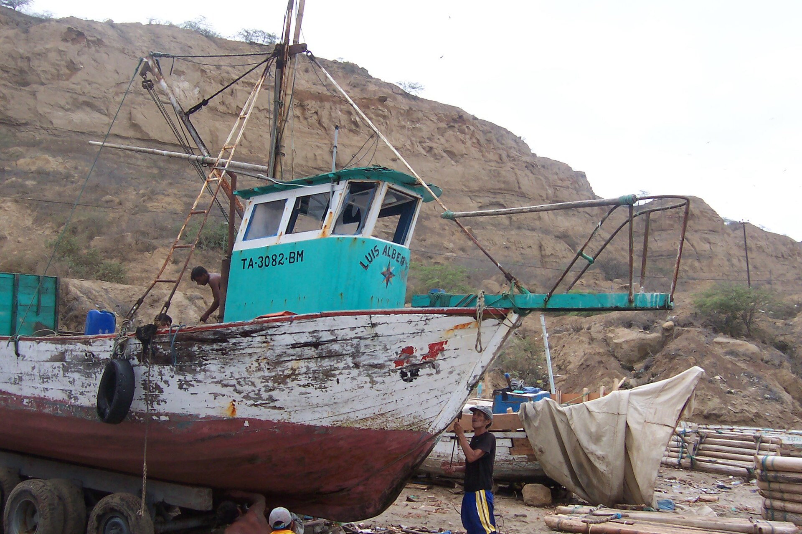
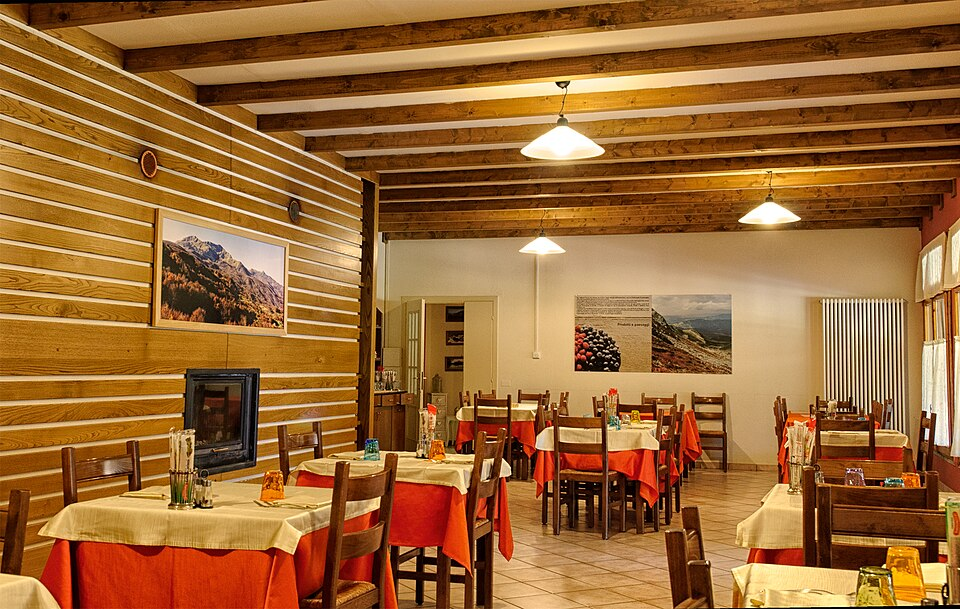
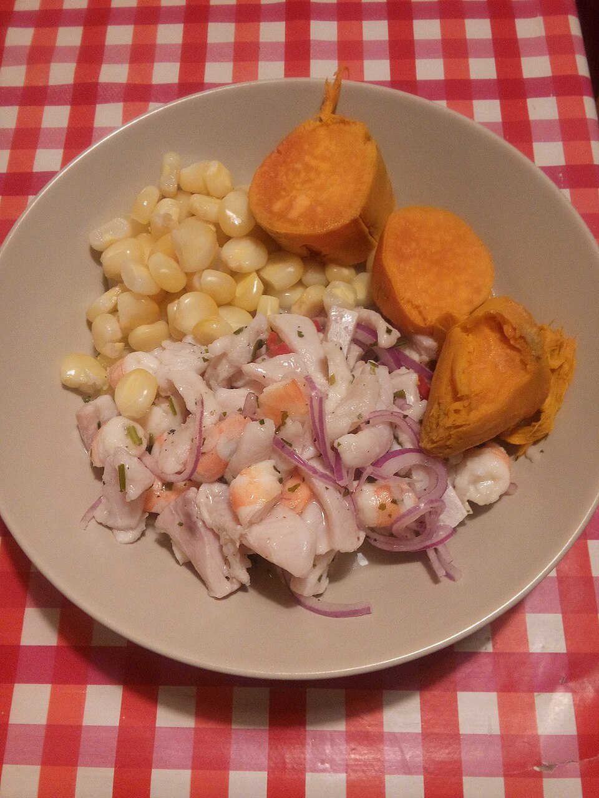
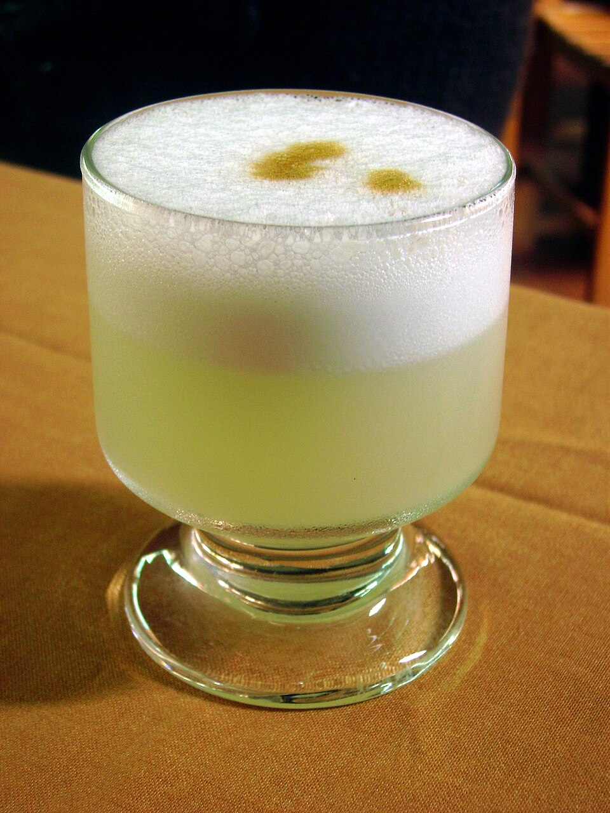
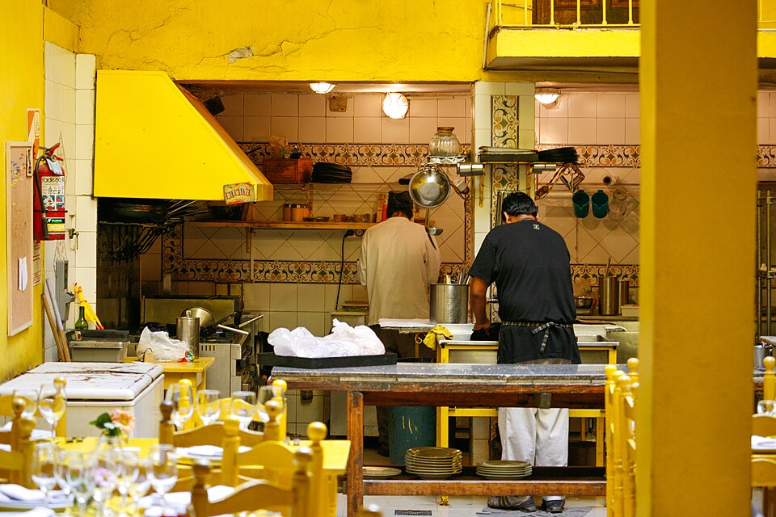
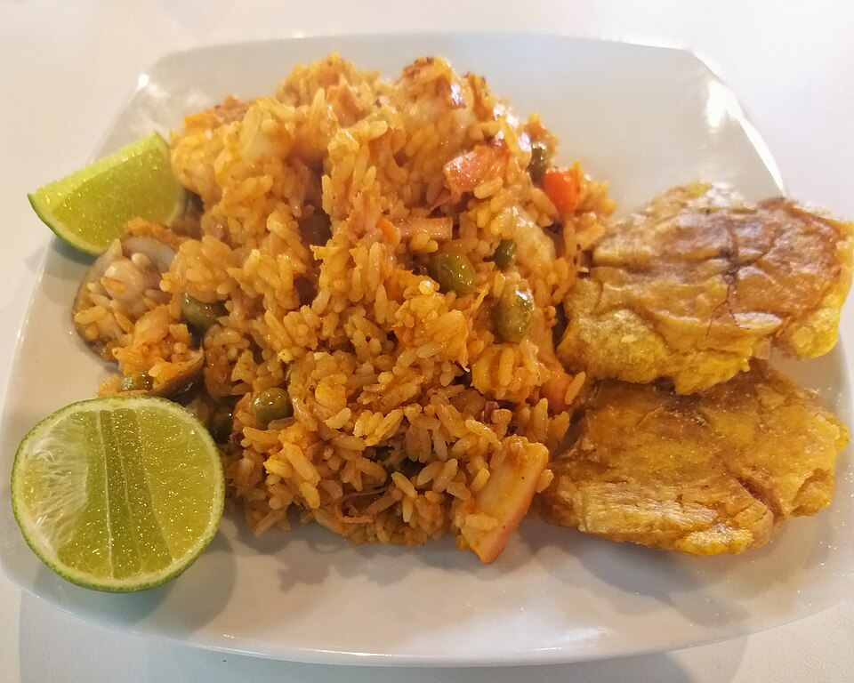

Ceviche Clásico Mancoreño
$9.900Pescado blanco marinado en limón, ají limo, cebolla morada y camote. El plato bandera de la casa.
Cocina peruana de autor · En el corazón de Chile
Ceviches frescos, tiraditos, causas y anticuchos preparados con recetas tradicionales de Máncora, fusionados con el mejor producto del mar chileno.

Nuestra historia
Máncora es una caleta de pescadores en el norte del Perú, famosa por sus olas, su sol y una cocina que combina el pescado más fresco con ají, limón y tradición. Costas de Máncora nació del deseo de traer esa misma esencia a Chile: un espacio donde cada plato cuenta una historia de mar, familia y sabor.
Trabajamos con pescadores y proveedores locales para garantizar frescura diaria, mientras mantenemos vivas las recetas que aprendimos de nuestras abuelas en la costa peruana.
Compramos pescados y mariscos frescos cada mañana para asegurar la mejor calidad en cada plato.
Preparaciones fieles a la cocina norteña peruana, transmitidas de generación en generación.
Un espacio cálido decorado con la esencia costera de Máncora, ideal para compartir en familia.
Lleva nuestros sabores a tu casa u oficina a través de nuestros canales de despacho.
Galería
Fotos referenciales — reemplaza estos espacios por fotografías reales del local y los platos.

🍽️ Salón principal
🐟 Ceviche del día
🍹 Barra de cocteles
👩🍳 Nuestra cocina 🌅 Terraza al atardecer
🌅 Terraza al atardecer
🥘 Arroz con mariscosReputación
Visítanos
Av. Vicuña Mackenna 5343, San Joaquín, Santiago
Lunes a sábado: 12:00 – 00:00
Domingo: 12:00 – 20:00
Reservas
Completa el formulario y te confirmaremos por WhatsApp a la brevedad. También puedes escribirnos directamente.
💬 Escríbenos por WhatsApp